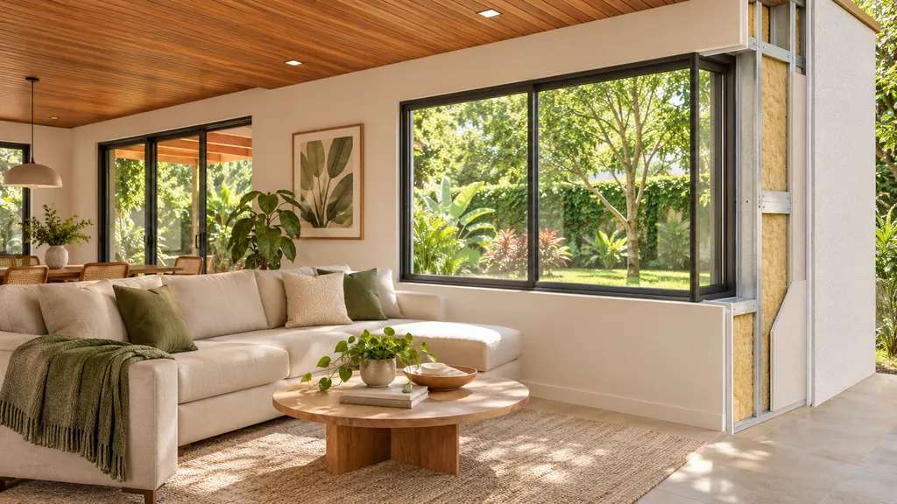

Uma estrutura leve de aço, pensada antes de ser montada.
Light Steel Frame é um sistema construtivo em que a casa é sustentada por perfis finos de aço, em vez de pilares e vigas de concreto. Aqui está o essencial, em linguagem simples.
Um esqueleto de aço que dá forma à casa
A estrutura é formada por perfis de aço galvanizado, dobrados a frio e unidos por parafusos. Eles desenham as paredes, os pisos e o telhado, como um esqueleto.
Por serem peças leves e padronizadas, a montagem segue o que foi definido no projeto: a posição de cada perfil, das aberturas e das passagens de instalações é decidida antes de a obra começar.
É um sistema de construção a seco: a estrutura e as paredes são montadas com peças e placas, e não erguidas com tijolo e argamassa.

Uma parede feita de camadas
Em vez de um bloco maciço, a parede é montada em camadas. Cada uma cumpre uma função.
Estrutura
Os perfis de aço, que sustentam a casa.
Fechamento externo
Placas que fecham a parede pelo lado de fora, com uma barreira contra umidade.
Isolamento
Material colocado entre os perfis, no miolo da parede. O tipo e a espessura são definidos no projeto.
Fechamento interno
Placas que formam a face de dentro da parede. As instalações passam por dentro, entre os perfis.
Acabamento
Pintura, revestimentos e o que mais o projeto prever, por dentro e por fora.

Como a obra acontece
A sequência geral de uma casa em Light Steel Frame. Os detalhes de cada etapa dependem do projeto e do terreno.
Projeto
Arquitetura e estrutura definidas em detalhe, incluindo as passagens de instalações.
Fundação
A base que recebe a estrutura, preparada de acordo com o terreno.
Estrutura
Os perfis de aço são montados no terreno: paredes, pisos e telhado.
Fechamentos
Placas, isolamento, cobertura, janelas e instalações por dentro das paredes.
Acabamentos
Revestimentos, pintura, louças e os detalhes finais da casa.
O que depende do seu projeto
Alguns pontos não têm resposta única. Eles variam com o terreno, o tamanho da casa e as especificações escolhidas, e são tratados caso a caso.
Prazo
Depende do tamanho da casa, do terreno e das etapas contratadas.
Custo
Depende do projeto, dos acabamentos e da localização.
Conforto térmico e acústico
Depende dos materiais de isolamento e fechamento especificados.
Garantias
Condições a serem informadas pela Lucerna em cada proposta.
PendenteInformações técnicas (normas seguidas, sistemas de fechamento e isolamento usados, prazos e garantias) a confirmar com o responsável técnico da Lucerna.